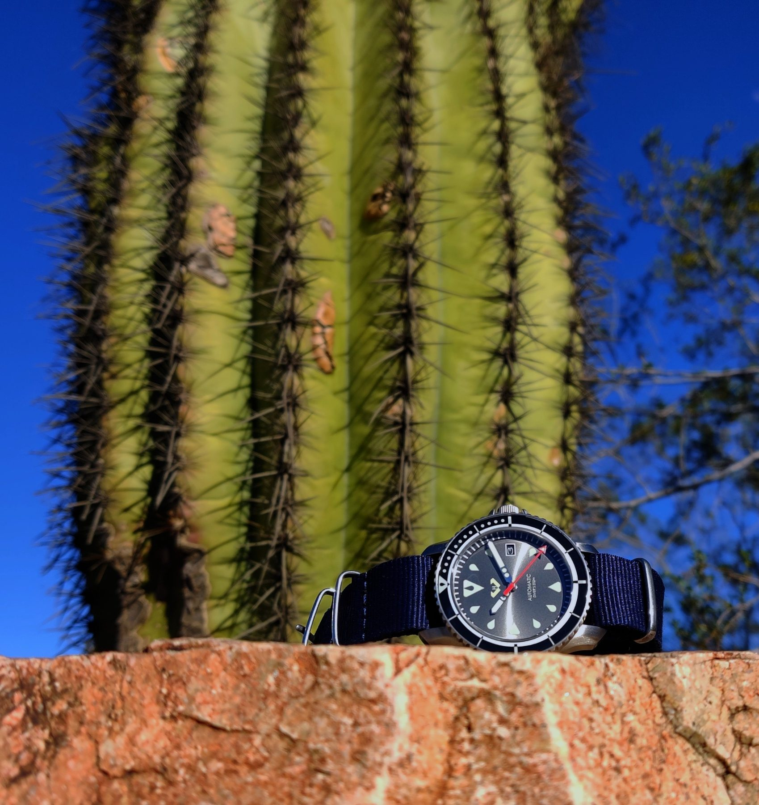
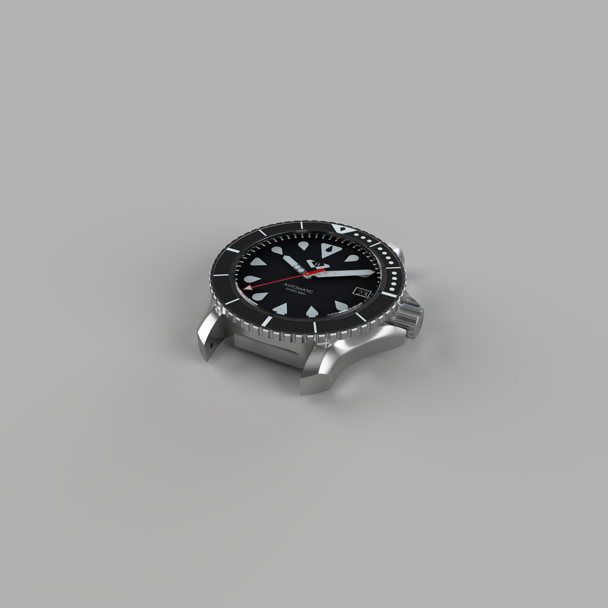

Compensation Platform Modernization
Modernizing a sensitive compensation system by reducing manual exceptions, improving transparency, and sequencing pilots to restore momentum while standardizing pay models for scale.
I like the messy middle: clarifying decisions, aligning stakeholders, and keeping delivery moving.
Based in New Mexico. Open to project and program work where strategy and delivery meet.
I build trust through clarity, steady cadence, and follow-through.
Selected accomplishments and case studies, written for quick scanning.
Modernizing a sensitive compensation system by reducing manual exceptions, improving transparency, and sequencing pilots to restore momentum while standardizing pay models for scale.
Delivered a $3M+ gainshare program by structuring delivery phases, enforcing data-quality controls, and aligning executive stakeholders to ensure accurate payouts to 1,200+ members.
Redesigned a multi-department onboarding and credentialing workflow by standardizing intake, automating ticketing, and running an operational cadence to cut time to productivity by about 50%.
A dive watch I designed from scratch.
Hyalus is the dive watch I designed from scratch.
I took Altum from sketches to CAD to a working prototype, then ran a Kickstarter launch. It reached 116 backers and $26,891 pledged.
Simple, unique, robust.

Altum in the New Mexico desert.



Outcomes-focused and allergic to ambiguity that never becomes action.
I am a project and program manager who likes hard problems that live between systems and stakeholders. I am most useful when the work is cross-functional, the constraints are real, and trust matters.
My default approach is to get clear on the decision points, build a cadence that forces progress, and make the work easy to understand for the people who have to live with it.
If you have a role in mind or want to connect, email is best.